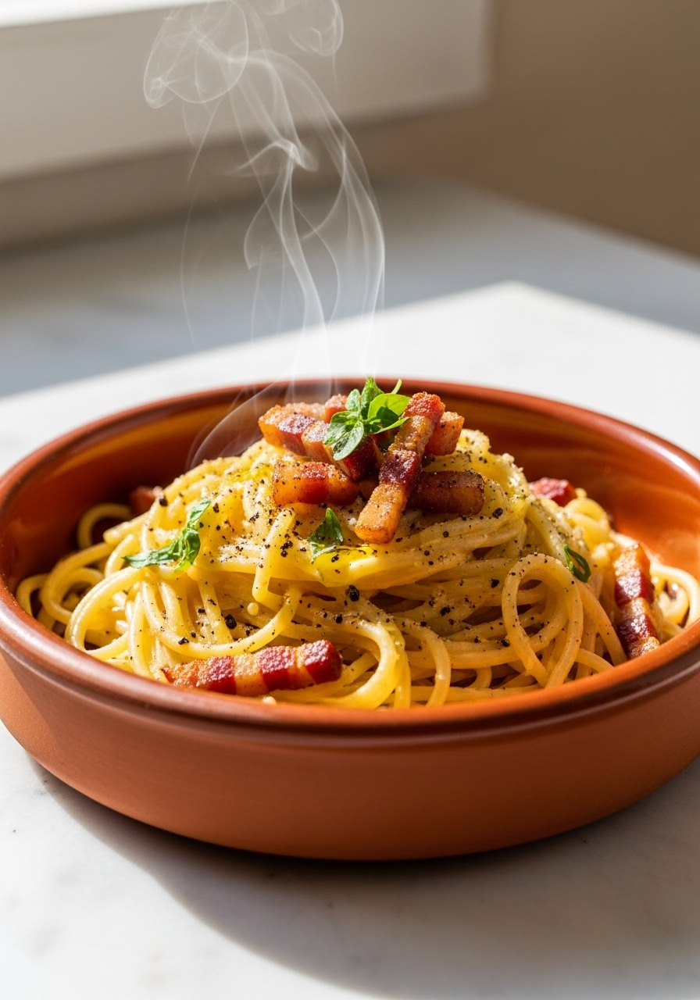
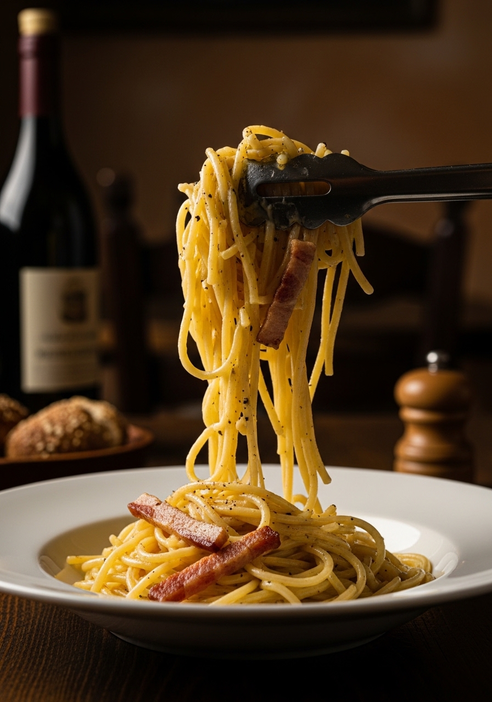

Dimentica la panna. La vera carbonara romana è una salsa setosa e ricca fatta con uova, Pecorino Romano e un goccio di acqua di cottura amidacea — nient'altro. Questa è la ricetta che i romani preparano davvero in casa, tramandata di generazione in generazione.

20 MinLa vera carbonara è nata a Roma dopo la Seconda Guerra Mondiale, e la ricetta originale si basa interamente sulla magia dell'emulsione delle uova. Quando la pasta calda incontra le uova sbattute e l'acqua di cottura amidacea, si forma naturalmente una salsa setosa e vellutata. Aggiungere la panna rompe questa chimica e rende il piatto più pesante e meno ricco di sfumature. I cuochi romani sono appassionati su questo: niente panna, niente aglio, niente cipolla. Solo i quattro ingredienti di base preparati alla perfezione.
Il guanciale (guancia di maiale stagionata) è la scelta tradizionale — il suo contenuto di grasso più elevato e il sapore più intenso fanno davvero la differenza. La pancetta è un sostituto perfettamente accettabile se il guanciale è difficile da trovare. Evita il bacon affumicato, che ha un sapore che stride con l'equilibrio delicato del piatto. Se sei in Italia, usa il guanciale senza esitazione.
Ingredienti
Procedimento

La carbonara non si conserva bene — la salsa si rompe al riscaldamento. È pensata per essere consumata immediatamente appena tolta dal fuoco. Se devi riscaldarla, fallo molto delicatamente in padella a fuoco basso con un goccio d'acqua, mescolando continuamente. Non usare mai il microonde.
Sì, ma il sapore sarà più affumicato e meno autentico. La pancetta è il miglior sostituto — è stagionata ma non affumicata, mantenendo il profilo aromatico più vicino alla ricetta romana originale.
La padella o la pasta erano troppo calde quando hai aggiunto le uova. Togli sempre dal fuoco prima, poi aggiungi il composto di uova mescolando velocemente. Aggiungi acqua di cottura fredda per abbassare la temperatura se necessario.
Usa solo Parmigiano Reggiano se non trovi il Pecorino. Il sapore sarà più delicato e meno pungente, ma rimane comunque una pasta deliziosa. La sapidità e il carattere del Pecorino sono ciò che rende la carbonara autentica.
Lo standard è 2 tuorli a persona più 1 uovo intero ogni 2 porzioni. Questo rapporto dona la salsa più ricca e stabile.
Le uova vengono cotte delicatamente dal calore della pasta — non rimangono mai crude. La salsa raggiunge una temperatura sicura durante la mantecatura. Usa uova fresche di alta qualità.